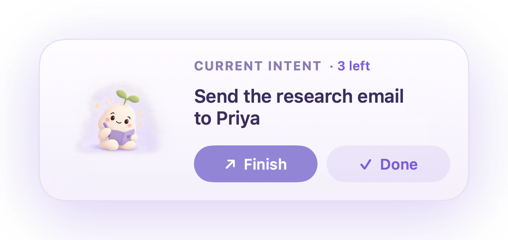
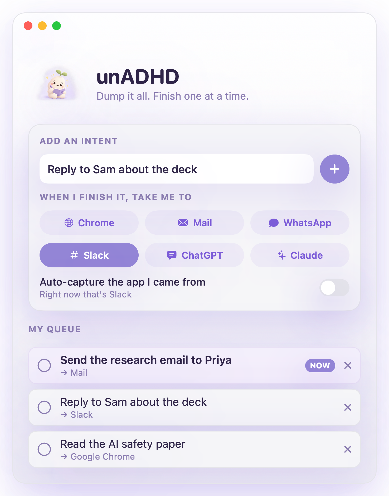

A tiny macOS companion that keeps your current task in a floating card above every app — with one tap to jump back to it.
macOS 13+ · Apple Silicon · no account, no tracking

⌃⌥⇧UUna keeps your current intent on top while you work in any app.
Built for the wander-off moment
You open an app to do one thing, get pulled into five others, and forget the first. unADHD keeps that one thing in front of you until it's done.
A floating card shows only the next unchecked intent. Mark it done and the next slides in.
Stays glanceable over every app — including other apps' fullscreen spaces.
Jumps you straight to the app or link that intent is about — no hunting through windows.
⌃⌥⇧U sets an intent without leaving the app you're in — and remembers where to send you back.
Drift off your task for too long and the card pulses to pull you back — never nags.
Dump the whole list at once; check it off one at a time without the overwhelm.
Three steps
Add what needs doing and where each one lives — an app or a link.
The card floats along with you, showing just the current one.
One tap takes you back to it. Mark it done and the next appears.
A peek inside
Dump every intent, pick where each one sends you, and work down the list. Una out front only ever shows the current one.

Private by design
unADHD asks for as little as possible — so no permission prompt should ever look suspicious.
No account, no sync, no servers, no analytics — unADHD makes no network calls at all.
It sees which app is frontmost using macOS's standard app-switch notifications — it never reads or controls your other apps.
It uses a system hotkey API, so there's no Accessibility prompt to approve.
Notifications — only when you turn on nudge notifications. A Login Item — only if you enable “Launch at login.” That's it.
Get it
Free, open source, and fully on-device.
unADHD.zip and move unADHD.app to your Applications folder.xattr -dr com.apple.quarantine /Applications/unADHD.appOnly run that command on apps you downloaded from a source you trust (like this page). It doesn't disable any system protection — it just skips the check for this one file. On macOS 15+ the old right-click → Open shortcut no longer works.
Prefer to build it yourself? Build from source — it compiles with the Command Line Tools, no Xcode needed.